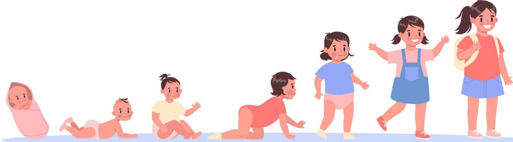
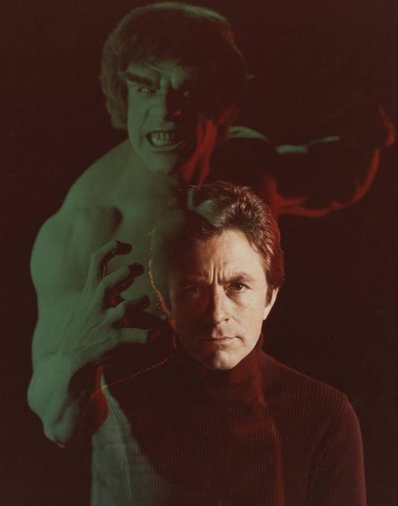
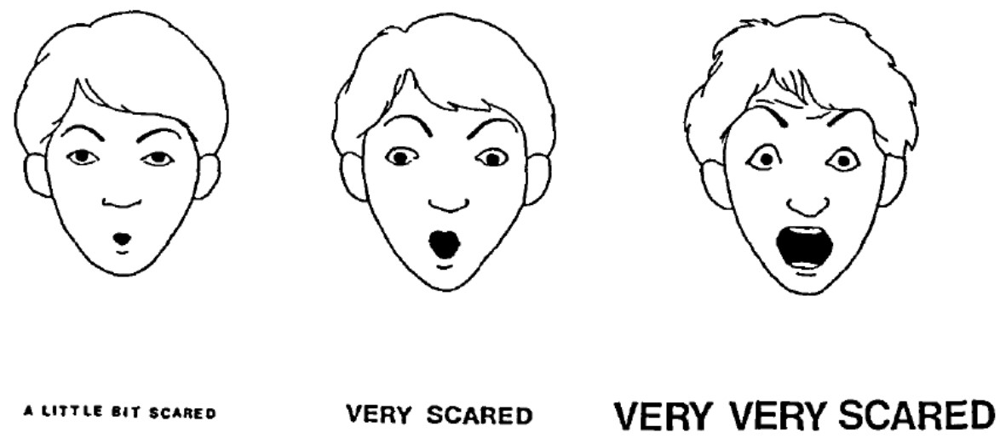

4 Media and Emotions
4.1 Scary Media and Children
Children who are between two to seven years old think perceptually: how things appear tend to dominate a child’s interpretation and reaction to the world.
Children who are older than seven begin moving towards conceptual or abstract thought.
4.1.1 Incredible Hulk Story

50 participants from two pre-schools (three to five year olds) and 51 children (aged nine to eleven years old) in an elementary school partook in this study.

The participants were shown a clip of the Hulk transforming and saving somebody in the hospital before being asked how they felt.
Older children showed more fear during the clip’s explosions and fires, only calming down when the Hulk appeared. Younger children were calmer at the beginning of the Hulk show and got upset when the Hulk appeared.
Hence, this study showed that different kinds of media have different fear responses among children of different ages. Older children would have felt a greater amount of fear the scene shown was a real possibility and the consequences are physically threatening.
4.2 Law of Apparent Reality
“Emotions are elicited by events appraised as real, and their intensity corresponds to the degree to which this is the case”.
– Lecturing slides
Hence, the implication of the above blockquote is that a viewer who perceives content to be “real” will feel higher amounts of fear or another emotion.
4.3 Lingering Effects of Fear
There are two kinds of memories:
Explicit Memories
These are memories that are stored in the hippocampus and are more susceptible to change and decay1.
Implicit Memories
These are memories that are stored in the amygdala and are recalled quickly. Such memories can also evoke the fight-or-flight response.
4.4 Coping with Fear and Media
Cognitive strategies are strategies that encourage children to think about what they know and relate their knowledge to the scary aspects of what they are watching.
Non-cognitive strategies involve distracting or avoiding the content in general.
Such strategies may involve:
Restrictive parental mediation
This is where parents set strict rules about media.
Active mediation
This is where parents instruct and explain to children on media usages.
Co-Use
Parents and children use the same media together.
4.4.1 Behavioral Consequences
This sub-subsection examines several theories:
4.4.1.1 Theory of Excitation Transfer**
This states that arousal from any source can intensify an emotional experience and make it much more prominent that it typically would (i.e., minus the arousal).
In the context of fear, fear itself can become euphoria.
4.4.1.2 Theory of Mood Management
This theory four components to it:
Excitatory Potential
Media can influence physiological arousal.
Absorption Potential
Media presentations can “absorb” the viewer into the content - this is also known as flow theory in academia.
Semantic Affinity
Media content can be associated with people’s positive and negative emotions.
Hedonic Valence
This refers to the idea that media is capable of stirring people’s emotions.
4.4.2 Limitations of Fear Appeals
Fear is an emotion that protects one against danger (or somethign else).
However, fear’s effectiveness also depends on the event itself and the person.
That is, explicit memories are easier forgotten.↩︎